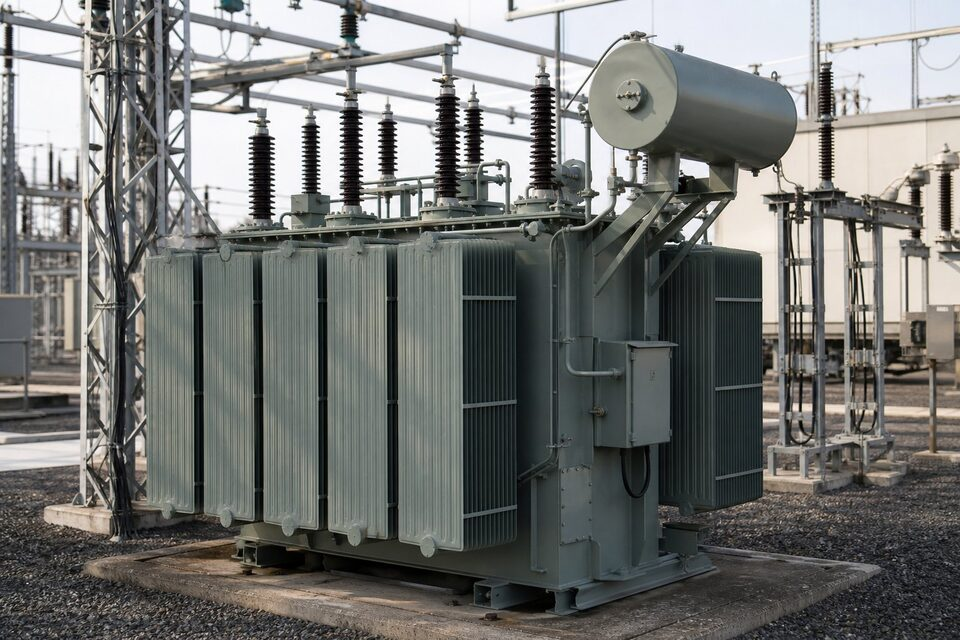

نقش ترانسفورماتور توزیع در شبکه
شبکه برق یک زنجیره تبدیل ولتاژ است: تولید در ولتاژ متوسط، انتقال در ولتاژهای بالا و سپس کاهش تدریجی تا سطح مصرف. ترانسفورماتور توزیع آخرین حلقه این زنجیره است که ولتاژ شبکه توزیع را به سطح مصرفکنندهها کاهش میدهد؛ در واحدهای صنعتی معمولا تبدیل ۲۰ کیلوولت به ۴۰۰ ولت برای تغذیه تابلوهای اصلی، موتورها و روشنایی. این ترانسها در توانهای استاندارد از چند ده تا چند هزار کیلوولتآمپر ساخته میشوند و به دلیل کارکرد مداوم، یکی از پرتعدادترین تجهیزات شبکه برق هستند. انتخاب درست توان و نوع ترانس، هم هزینه انرژی را در طول عمر تعیین میکند و هم قابلیت اطمینان تغذیه واحد را؛ بنابراین خرید ترانس یک تصمیم اقتصادی بلندمدت است، نه صرفا یک خرید تجهیز.

روغنی در مقابل خشک
در ترانسفورماتورهای روغنی، هسته و سیمپیچها درون تانک پر از روغن عایق قرار دارند؛ روغن هم عایقکاری و هم انتقال حرارت را بر عهده دارد و از طریق رادیاتورها خنک میشود. این ساختار اقتصادی، با ظرفیتهای بالاتر و تحمل اضافه بار بهتر، انتخاب رایج نصبهای فضای باز است. در ترانسهای خشک، عایقبندی سیمپیچها با رزین انجام و خنککاری با هوای طبیعی یا اجباری صورت میگیرد؛ نبود روغن یعنی حذف ریسک نشتی و آتشسوزی، که این نوع را برای نصب در فضاهای بسته، نزدیک بارهای حساس و محیطهای با الزامات ایمنی بالا مناسب میکند. قیمت ترانس خشک معمولا بالاتر است و حساسیت بیشتری به شرایط محیطی مانند رطوبت و غبار دارد؛ بنابراین انتخاب باید بر اساس محل نصب، الزامات ایمنی و بودجه کل مالکیت انجام شود.
پارامترهای نامی و انتخاب توان
- توان نامی: بر اساس بار محاسبهشده با حاشیه مناسب برای رشد آینده.
- ولتاژهای اولیه و ثانویه: متناسب سطح شبکه و مصرفکنندهها.
- گروه برداری: تعیینکننده اختلاط فازها و رفتار در بارهای نامتقارن.
- امپدانس: اثر بر جریان اتصال کوتاه و افت ولتاژ؛ باید با مطالعه شبکه هماهنگ باشد.
- تلفات بدون بار و با بار: پایه محاسبه هزینه انرژی در طول عمر.
یک اشتباه رایج، انتخاب ترانس صرفا بر اساس بار لحظهای بدون دیدن رشد آینده است؛ تعویض ترانس در آینده بسیار پرهزینهتر از انتخاب توان بزرگتر در ابتداست. در مقابل، ترانس خیلی بزرگتر از نیاز نیز هم سرمایه اولیه را هدر میدهد و هم تلفات بدون بار بالاتری دارد. نقطه بهینه معمولا با بارپذیری حدود هفتاد تا هشتاد درصد توان نامی در بار پیک به دست میآید. در واحدهایی با بارهای ضربهای مانند موتورهای بزرگ، افت ولتاژ راهاندازی نیز باید در انتخاب توان دیده شود تا کیفیت برق سایر مصرفکنندهها افت نکند.
تلفات و ارزیابی اقتصادی
تلفات ترانسفورماتور دو جزء دارد: تلفات بدون بار که در هسته رخ میدهد و مستقل از بار، همیشه وجود دارد، و تلفات با بار که در سیمپیچها و متناسب مجذور جریان است. چون ترانسهای توزیع سالها به صورت مداوم برقدارند، جمع این تلفات به هزینه انرژی قابل توجهی تبدیل میشود. سازندگان، ترانسها را در کلاسهای تلفات مختلف عرضه میکنند و ترانسهای کمتلفات قیمت اولیه بالاتری دارند. ارزیابی حرفهای خرید، قیمت خرید را با ارزش حال هزینه تلفات در طول عمر مقایسه میکند؛ در بسیاری موارد، انتخاب ترانس کمتلفات ظرف چند سال بازگشت سرمایه دارد. در پروژههای بزرگ با تعداد زیاد ترانس، این ارزیابی اقتصادی باید به یک رویه استاندارد تبدیل شود.
نکات نصب و نگهداری
نصب ترانس روغنی در فضای باز نیازمند فونداسیون مناسب، حوضچه جمعآوری روغن برای شرایط نشتی و رعایت فواصل ایمنی است؛ ترانس خشک نیز در فضای بسته به تهویه کافی برای دفع حرارت نیاز دارد. اتصال زمین بدنه، حفاظتهای بالادست مانند فیوز یا کلید و برقگیر در سمت فشار متوسط از الزامات ایمنیاند. در نگهداری، پایش دمای روغن و بار، بازرسی نشتی، آزمایشهای دورهای روغن مانند شکست دیالکتریک و رطوبت، و کنترل وضعیت بوشینگها اهمیت دارند. ترانسهای خشک نیز نیازمند بازرسی تمیزی سطوح عایقی و اتصالاتاند؛ تجمع غبار میتواند خنککاری را مختل و ریسک تخلیه سطحی را افزایش دهد.
معیارهای استعلام خرید
در استعلام، توان نامی، ولتاژهای اولیه و ثانویه با محدوده تپهای تنظیم، گروه برداری، نوع خنککاری، کلاس تلفات موردنظر و شرایط محیطی نصب را ذکر کنید. اگر ترانس در ارتفاع بالا یا دمای محیط غیرمتعارف نصب میشود، حتما قید کنید چون نیازمند ضرایب تصحیح است. مدارک تحویلی شامل گزارش آزمونهای کارخانهای، نقشههای ابعادی برای طراحی فونداسیون و دستورالعمل نصب و نگهداری را نیز بخواهید. زمان ساخت ترانسهای سفارشی معمولا چند هفته تا چند ماه است و در پروژههای زمانبندیشده، سفارش زودهنگام توصیه میشود.
جمعبندی
ترانسفورماتور توزیع یک سرمایهگذاری بلندمدت است که انتخاب درست آن، دههها سرویس قابل اتکا و هزینه انرژی بهینه ایجاد میکند. با محاسبه توان بر اساس بار و رشد آینده، انتخاب نوع متناسب محل نصب و ارزیابی اقتصادی تلفات، خریدی حرفهای خواهید داشت که هم ایمنی و هم اقتصاد شبکه واحد را تامین میکند.
سوالات رایج
ترانسفورماتور توزیع چه وظیفهای دارد؟
کاهش ولتاژ شبکه توزیع به سطح مصرفکنندهها؛ در صنعت معمولا تبدیل ولتاژ متوسط به فشار ضعیف برای تغذیه تابلوها و موتورهای واحد.
تفاوت ترانس روغنی و خشک چیست؟
ترانس روغنی از روغن برای عایقکاری و خنککاری استفاده میکند و اقتصادیتر است؛ ترانس خشک با عایقبندی رزینی برای نصب در فضاهای بسته و حساس به ایمنی آتش انتخاب میشود.
تلفات ترانسفورماتور چه اهمیتی دارد؟
ترانسها ۲۴ ساعته زیر بارند و تلفات آنها در طول عمر به هزینه انرژی قابل توجهی تبدیل میشود؛ بنابراین خرید ترانس کمتلفات معمولا در چند سال بازگشت سرمایه دارد.
در انتخاب ترانس چه پارامترهایی تعیینکنندهاند؟
توان نامی با حاشیه مناسب، ولتاژهای اولیه و ثانویه، گروه برداری، امپدانس، نوع خنککاری و شرایط محیطی نصب مانند دما و ارتفاع از سطح دریا.
مطالب مرتبط
با ذکر توان، ولتاژها و شرایط نصب، ترانسفورماتور توزیع روغنی یا خشک از سازندگان معتبر عرضه میشود.
مشاهده صفحه محصول ← ثبت RFQ همین محصولتامین این تجهیزات را به پیشرو تجهیز فرتاک بسپارید
شرکت پیشرو تجهیز فرتاک تامینکننده تخصصی تجهیزات صنعتی برای پروژههای نفت، گاز، پتروشیمی، فولاد و نیروگاهی است. برای دریافت پیشنهاد فنی و قیمت، استعلام (RFQ) خود را ثبت کنید تا کارشناسان مهندسی فروش در کوتاهترین زمان پاسخ دهند.
- تامین برق صنعتیتجهیزات تابلو و حفاظتی
- تامین تجهیزات صنایع نفت و گازپکیج مواد مطابق وندورلیست